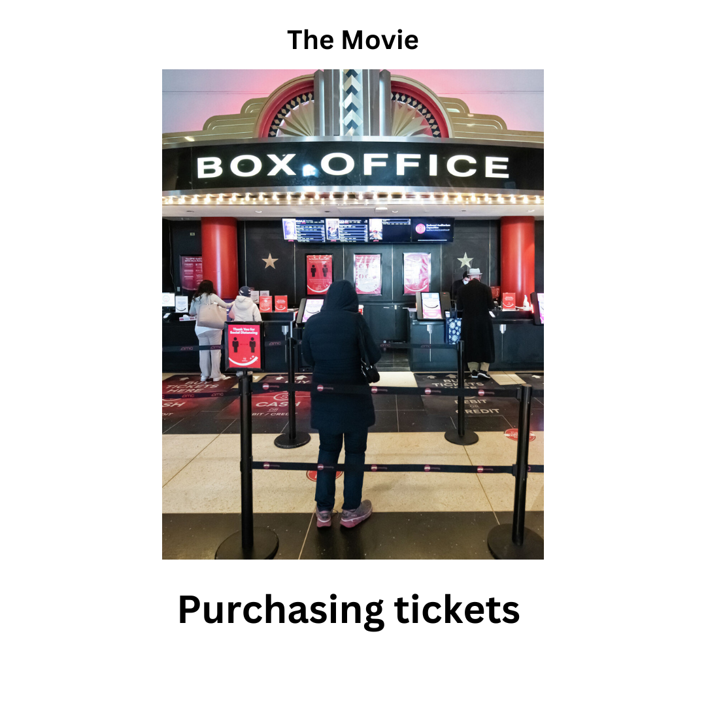
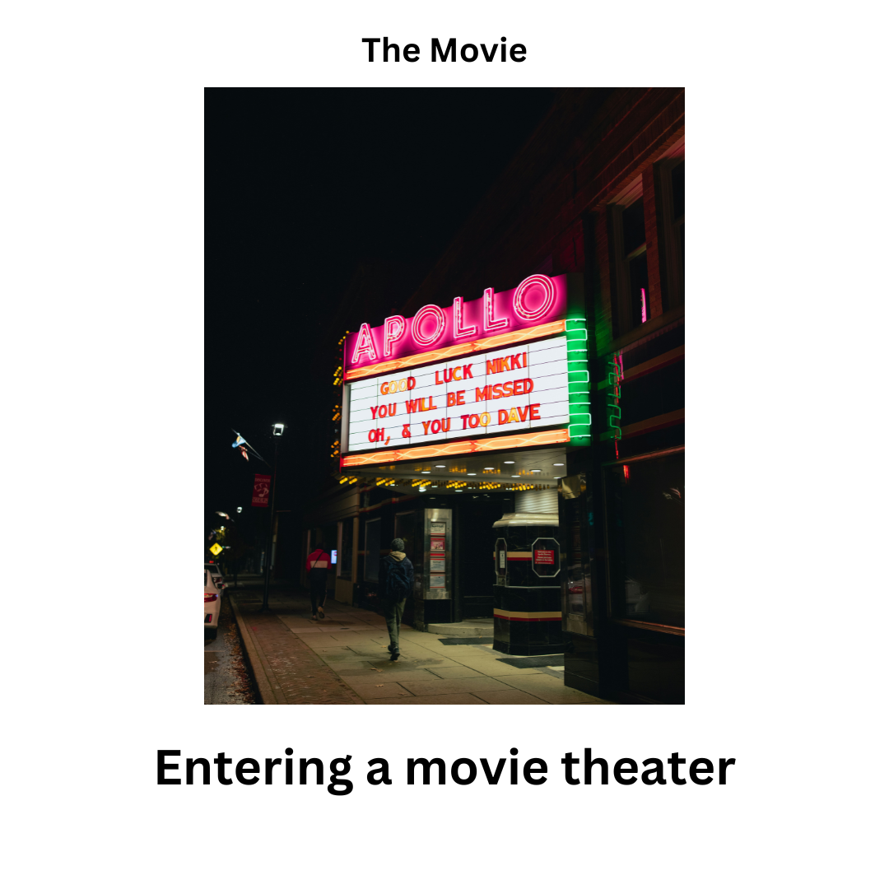

<!DOCTYPE html>
<html>
  <head>
    <style>
      /* Lock the image size for consistency */
      .exp-image {
          width: 500px;
          height: 400px; /* Fixed height to prevent layout jumps */
          object-fit: contain; /* Keeps aspect ratio without distortion */
          border: 2px solid #ccc;
          display: block;
          margin: 0 auto;
      }

      /* Container to keep everything centered and uniform */
      .stimulus-container {
          width: 600px;
          margin: 0 auto;
          text-align: center;
      }

      /* Fixed height for the question area so buttons don't move */
      .question-area {
          height: 100px;
          display: flex;
          align-items: center;
          justify-content: center;
      }

      .hide_cursor {
        cursor: none;
      }
    </style>
    <title>My experiment</title>
    <script src="jspsych/plugins/jspsych.js"></script>
    <script src="jspsych/plugins/plugin-instructions.js"></script>
    <script src="jspsych/plugins/plugin-html-button-response.js"></script>
    <script src="jspsych/plugins/plugin-survey-text.js"></script>
    <script src="jspsych/plugins/plugin-html-keyboard-response.js"></script>
    <script src="jspsych/plugins/plugin-survey-likert.js"></script>
    <script src="jspsych/plugins/plugin-fullscreen.js"></script>
    <script src="jspsych/plugins/plugin-preload.js"></script>
    <link rel="stylesheet" href="jspsych/css/jspsych.css">
  </head>
  <body></body>
  <script>
    // Define data folder for saving results
    var data_folder = 'data/';

// Function to save data via POST request
function saveData(data) {
    // ה-PHP שלך מצפה ל-JSON עם המפתח 'filedata'
    // השם "data.csv" נשלח כאן אבל ה-PHP שלך יתעלם ממנו וייצר שם מבוסס זמן
    fetch('write_data.php', {
        method: 'POST',
        headers: {
            'Content-Type': 'application/json',
        },
        body: JSON.stringify({ filedata: data })
    })
    .then(response => {
        if (!response.ok) {
            throw new Error('Network response was not ok: ' + response.status);
        }
        return response.json();
    })
    .then(result => {
        console.log("Success! File saved as: ", result.file);
        // הצגת קוד הסיום למשתמש רק לאחר וידוא שהנתונים נשמרו
    })
    .catch(error => {
        console.error("Error saving data:", error);
        alert("There was an error saving your data. Please do not close this window.");
    });
}

// Initialize jsPsych
var jsPsych = initJsPsych({
    on_finish: function() {
        // שולח את הנתונים בפורמט CSV. 
        // ה-PHP שלך כבר מוסיף תאריך, שעה ו-ID ייחודי לשם הקובץ בתיקיית data/
        saveData(jsPsych.data.get().csv());
    }
});

    // Generate a random subject ID
    var subject_id = jsPsych.randomization.randomID(15);

    // Initialize experiment timeline
    var timeline = [];

    // Adding subject properties
    var subject_id = jsPsych.data.getURLVariable('participantId');
    var study_id = jsPsych.data.getURLVariable('assignmentId');
    var session_id = jsPsych.data.getURLVariable('projectId');

    jsPsych.data.addProperties({
      subject_id: subject_id,
      study_id: study_id,
      session_id: session_id,
    });


    // ----------- PRELOAD SECTION -----------

       // Instruction images
    var instruction_images = [];
    for (var i = 0; i <= 4; i++) {
        instruction_images.push(`images/instructions/movie_${i}.png`);
    }

var causal_folders = ['coin_causal', 'dog_causal', 'museum_causal', 'package_causal', 'saving_a_cat_causal', 'the_performance_causal'];
var schematic_folders = ['dinner_party_scheme', 'flight_scheme', 'hotel_scheme', 'interview_scheme', 'restaurant_scheme', 'supermarket_scheme'];
// הוספת התיקיות הסמנטיות
var semantic_folders = [
    'cat_care_semantic', 'creative_activities_semantic', 'exploring_nature_semantic', 'housework_semantic', 
    'kitchen_operations_semantic', 'maintaining_a_car_semantic', 'market_semantic', 'physical_activity_semantic', 
    'redecorating_a_house_semantic', 'self_care_activities_semantic', 'using_technology_semantic', 'visiting_cities_semantic'
];

var all_folders = [...causal_folders, ...schematic_folders, ...semantic_folders];

// --- הגרלת תגמולים (12 יקירות, 12 ניטרליות) ---
var valuable_causal = jsPsych.randomization.sampleWithoutReplacement(causal_folders, 3);
var valuable_schematic = jsPsych.randomization.sampleWithoutReplacement(schematic_folders, 3);
var valuable_semantic = jsPsych.randomization.sampleWithoutReplacement(semantic_folders, 6);

var all_valuable = [...valuable_causal, ...valuable_schematic, ...valuable_semantic];

// לוג לקונסול למעקב
console.log("Valuable Folders:", all_valuable);

function getImagePath(folder, index) {
    var type = causal_folders.includes(folder) ? 'causal_sequence' : 
               schematic_folders.includes(folder) ? 'schematic_sequence' : 'semantic_sequence';
    var suffix = (index === 10) ? "ten" : index;
    return `images/${type}/${folder}/${folder}_${suffix}.png`;
}

function checkIsValuable(folder) {
    return all_valuable.includes(folder);
}

 var preload = {
        type: jsPsychPreload,
        images: [
            'consent_form_2022.png',
            ...instruction_images,
            ...causal_images,
            ...semantic_images
        ],
        message: 'Loading experiment assets... Please wait.',
        continue_after_error: true
    };
    timeline.push(preload);

    // ----------- INTRO / CONSENT -----------
    var trial_0 = {
      type: jsPsychInstructions,
      pages: [
        '<div style="font-family: Arial; padding: 100px; padding-top: 5%; text-align: left;">' +
        '<h2>Thank you for participating in this experiment!</h2>' +
        '<p>By clicking the "Begin Study" button, you will be taken to the study, including complete instructions and an informed consent agreement.</p>'
      ],
      show_clickable_nav: true
    };

    var trial_consent = {
      type: jsPsychInstructions,
      pages: [
        '<div style="text-align:center; font-family:Arial; font-size: 22px; padding-top:20px;">' +
        '<p>Please carefully read the consent form below before proceeding.</p>' +
        '</img>' +
        '</div>'
      ],
      show_clickable_nav: true
    };

    var trial_01 = {
      type: jsPsychFullscreen,
      fullscreen_mode: true
    };

    timeline.push(trial_0, trial_consent, trial_01);

    // ----------- OVERVIEW INSTRUCTIONS -----------
    var instructions_overview = {
        type: jsPsychInstructions,
        pages: [
            '<div style="font-family: Arial; text-align: left; padding: 50px; line-height: 1.6;">' +
            '<h2>Experiment Overview</h2>' +
            '<p>This experiment consists of <b>three parts</b>:</p>' +
            '<div style="background-color: #f9f9f9; border-left: 5px solid #333; padding: 20px; margin: 20px 0;">' +
            '<p><b>Part 1:</b> You will view a series of images depicting different events.</p>' +
            '<p><b>Part 2:</b> You will be shown specific images that are <b>worth money</b>.</p>' +
            '<p><b>Part 3:</b> You will choose between two images and estimate which one is more valuable. ' +
            'A correct guess will lead to a <b>monetary reward</b>.</p>' +
            '</div>' +
            '<p>Please pay close attention to the images and follow your intuition. Click "Next" to begin.</p>' +
            '</div>'
        ],
        show_clickable_nav: true
    };
    timeline.push(instructions_overview);

    // ----------- PART 1 EXAMPLE SEQUENCE -----------
    var part1_example_intro = {
        type: jsPsychInstructions,
        pages: [
            '<div style="font-family: Arial; text-align: center; padding: 50px;">' +
            '<h2>Part 1 Example</h2>' +
            '<p style="font-size: 20px;">You will now see a sequence of images as an example.</p>' +
            '<p style="font-size: 20px;">First, you will view the image, and then a question will appear below it.</p>' +
            '<p style="color: #d9534f;"><b>Your Task:</b> Answer if there is a person in the image using the buttons provided.</p>' +
            '<p>Click "Next" to start the example.</p>' +
            '</div>'
        ],
        show_clickable_nav: true
    };
    timeline.push(part1_example_intro);

    for (var i = 1; i <= 4; i++) {
        var example_view = {
            type: jsPsychHtmlKeyboardResponse,
            stimulus: `
                <div class="stimulus-container">
                    
                    <div class="question-area"></div> 
                </div>`,
            choices: "NO_KEYS", 
            trial_duration: 4000 
        };

        var example_question = {
            type: jsPsychHtmlButtonResponse,
            stimulus: `
                <div class="stimulus-container">
                    
                    <div class="question-area">
                        <p style="font-size: 20px; font-weight: bold; margin: 0;">Was there a person in this image?</p>
                    </div>
                </div>`,
            choices: ['Yes', 'No'],
            trial_duration: 3000, 
            response_ends_trial: true,
            data: { task: 'example_question', image_index: i }
        };
        timeline.push(example_view, example_question);
    }

    timeline.push({
        type: jsPsychInstructions,
        pages: ['<div style="text-align: center; padding: 50px;"><h3>Example Completed</h3><p>Click Next to start the actual experiment.</p></div>'],
        show_clickable_nav: true
    });

    // ----------- PART 1 MAIN EXPERIMENT -----------
// ----------- PART 1 MAIN EXPERIMENT -----------
var randomized_folders = jsPsych.randomization.shuffle(causal_folders);

randomized_folders.forEach(function(folderName) {
    // מסך אפור בין בלוקים
    timeline.push({
        type: jsPsychHtmlKeyboardResponse,
        stimulus: '<div style="background-color: gray; width: 100vw; height: 100vh;"></div>',
        choices: "NO_KEYS",
        trial_duration: 1000
    });

    // לופ של 10 תמונות (1 עד 10)
    for (var i = 1; i <= 10; i++) {
        
        // קביעת שם הקובץ: אם אנחנו באיטרציה ה-10, נשתמש ב-ten
        var image_suffix = (i === 10) ? "ten" : i;
        var current_image_path = `images/causal_sequence/${folderName}/${folderName}_${image_suffix}.png`;

        var main_view = {
            type: jsPsychHtmlKeyboardResponse,
            stimulus: `
                <div class="stimulus-container">
                    
                    <div class="question-area"></div> 
                </div>`,
            choices: "NO_KEYS",
            trial_duration: 5000 
        };

        var main_question = {
            type: jsPsychHtmlButtonResponse,
            stimulus: `
                <div class="stimulus-container">
                    
                    <div class="question-area">
                        <p style="font-size: 20px; font-weight: bold; margin: 0;">Is there a person in this image?</p>
                    </div>
                </div>`,
            choices: ['Yes', 'No'],
            trial_duration: 3000,
            response_ends_trial: true,
            data: {
                task: 'main_causal_task',
                folder: folderName,
                image_index: image_suffix // יישמר כ-"1", "2" ... או "ten"
            }
        };
        
        timeline.push(main_view, main_question);
    }
});
        // ----------- END SURVEY & COMPLETION -----------
    var part1_end = {
        type: jsPsychInstructions,
        pages: ['<div style="text-align: center; padding: 50px;"><h2>Part 1 Completed</h2><p>You have finished the first part of the experiment.</p></div>'],
        show_clickable_nav: true
    };
    timeline.push(part1_end);

 // ----------- PART 2: VALUE LEARNING (50% Valuable, 50% Neutral) -----------

// 1. Part 2 Introduction (מעודכן להסבר על שני הסוגים)
var part2_intro = {
    type: jsPsychInstructions,
    pages: [
        '<div style="font-family: Arial; text-align: center; padding: 50px;">' +
        '<h2>Part 2: Value Learning</h2>' +
        '<p style="font-size: 20px;">In this part, you will see images from the previous sequences.</p>' +
        '<p style="font-size: 20px;">Some images are <b>worth $1</b> (marked in <span style="color:green">GREEN</span>),<br>' +
        'and others have a <b>neutral value</b> (marked in <span style="color:grey">GREY</span>).</p>' +
        '<p style="font-size: 20px;">Study these images and their values carefully.</p>' +
        '<p>Click "Next" to see examples.</p>' +
        '</div>'
    ],
    show_clickable_nav: true
};
timeline.push(part2_intro);

// 2. Part 2 EXAMPLES (הצגת דוגמה של דולר ודוגמה של נטרלי)
var part2_examples = {
    timeline: [
        {
            type: jsPsychHtmlButtonResponse,
            stimulus: `
                <div style="margin-bottom:20px;"><h3>Example: Valuable Image</h3></div>
                <div class="stimulus-container" style="display: flex; align-items: center; justify-content: center; gap: 30px;">
                    
                    <div style="font-size: 35px; font-weight: bold; color: green; border: 5px solid green; padding: 20px; border-radius: 15px; background-color: #f0fff0;">
                        WORTH<br>$1
                    </div>
                </div>
                <div class="question-area"><p>Was there a person in this image?</p></div>`,
            choices: ['Yes', 'No']
        },
        {
            type: jsPsychHtmlButtonResponse,
            stimulus: `
                <div style="margin-bottom:20px;"><h3>Example: Neutral Image</h3></div>
                <div class="stimulus-container" style="display: flex; align-items: center; justify-content: center; gap: 30px;">
                    
                    <div style="font-size: 35px; font-weight: bold; color: grey; border: 5px solid grey; padding: 20px; border-radius: 15px; background-color: #f0f0f0;">
                        NEUTRAL<br>VALUE
                    </div>
                </div>
                <div class="question-area"><p>Was there a person in this image?</p></div>`,
            choices: ['Yes', 'No']
        }
    ]
};
timeline.push(part2_examples);

// 3. לוגיקת החלוקה של התיקיות (3 יקרות, 3 נטרליות)
var shuffled_folders = jsPsych.randomization.shuffle(causal_folders);
var valuable_folders = shuffled_folders.slice(0, 3); // שלוש הראשונות יקרות

// 4. הרצת הלופ של חלק 2
shuffled_folders.forEach(function(folderName) {
    var is_valuable = valuable_folders.includes(folderName);
    
    // הגדרת עיצוב לפי סוג הערך
    var reward_text = is_valuable ? "WORTH<br>$1" : "NEUTRAL<br>VALUE";
    var reward_color = is_valuable ? "green" : "grey";
    var reward_bg = is_valuable ? "#f0fff0" : "#f0f0f0";
    var reward_type_label = is_valuable ? "valuable" : "neutral";

    var value_indices = [3, 4, 5, 6, 7];
    var random_valuable_index = jsPsych.randomization.sampleWithReplacement(value_indices, 1)[0];

    var main_view_part2 = {
        type: jsPsychHtmlKeyboardResponse,
        stimulus: `
            <div class="stimulus-container" style="display: flex; align-items: center; justify-content: center; gap: 30px;">
                
                <div style="font-size: 40px; font-weight: bold; color: ${reward_color}; border: 5px solid ${reward_color}; padding: 25px; border-radius: 15px; background-color: ${reward_bg};">
                    ${reward_text}
                </div>
            </div>
            <div class="question-area"></div>`,
        choices: "NO_KEYS",
        trial_duration: 8000 
    };

    var main_question_part2 = {
        type: jsPsychHtmlButtonResponse,
        stimulus: `
            <div class="stimulus-container" style="display: flex; align-items: center; justify-content: center; gap: 30px;">
                
                <div style="font-size: 40px; font-weight: bold; color: ${reward_color}; border: 5px solid ${reward_color}; padding: 25px; border-radius: 15px; background-color: ${reward_bg};">
                    ${reward_text}
                </div>
            </div>
            <div class="question-area">
                <p style="font-size: 20px; font-weight: bold; margin: 0;">Was there a person in this image?</p>
            </div>`,
        choices: ['Yes', 'No'],
        trial_duration: 3000,
        response_ends_trial: true,
        data: {
            task: 'part2_value_learning',
            folder: folderName,
            valuable_image_index: random_valuable_index,
            reward_type: reward_type_label // תיוג ברור בדאטא: valuable/neutral
        }
    };
    timeline.push(main_view_part2, main_question_part2);
});
// ----------- PART 3: CHOICE & VALUATION TEST (Distance 2) -----------

// ----------- PART 3: CHOICE & VALUATION TEST (Distance 1) -----------

var part3_intro = {
    type: jsPsychInstructions,
    pages: ['<div style="text-align: center; padding: 50px;"><h2>Part 3: Final Choice</h2><p>Choose the "more valuable" image.</p></div>'],
    show_clickable_nav: true
};
timeline.push(part3_intro);

var randomized_folders_part3 = jsPsych.randomization.shuffle(causal_folders);

randomized_folders_part3.forEach(function(folderName) {
    
    var part3_sequence = {
        timeline: [
            {
                type: jsPsychHtmlKeyboardResponse,
                stimulus: function() {
                    // שליפת נתונים מחלק 2 כדי לדעת מה ה-X ומה סוג התגמול
                    var part2_info = jsPsych.data.get().filter({folder: folderName, task: 'part2_value_learning'}).values()[0];
                    var X = (part2_info) ? part2_info.valuable_image_index : 5;
                    
                    var is_left_smaller = (folderName.length % 2 === 0);
                    
                    // שינוי כאן: מ-X+/-2 ל-X+/-1
                    var left_idx = is_left_smaller ? X - 1 : X + 1;
                    var right_idx = is_left_smaller ? X + 1 : X - 1;

                    return `
                        <div style="font-family: Arial; margin-bottom: 20px;"><h3>Which image is more valuable?</h3></div>
                        <div class="stimulus-container" style="display: flex; width: 1100px; justify-content: center; gap: 50px;">
                            
                            
                        </div>`;
                },
                choices: "NO_KEYS",
                trial_duration: 10000
            },
            {
                type: jsPsychHtmlButtonResponse,
                stimulus: function() {
                    var part2_info = jsPsych.data.get().filter({folder: folderName, task: 'part2_value_learning'}).values()[0];
                    var X = (part2_info) ? part2_info.valuable_image_index : 5;
                    var is_left_smaller = (folderName.length % 2 === 0);
                    
                    // שינוי כאן: מ-X+/-2 ל-X+/-1
                    var left_idx = is_left_smaller ? X - 1 : X + 1;
                    var right_idx = is_left_smaller ? X + 1 : X - 1;

                    return `
                        <div style="font-family: Arial; margin-bottom: 20px;"><h3>Which image is more valuable?</h3></div>
                        <div class="stimulus-container" style="display: flex; width: 1100px; justify-content: center; gap: 50px;">
                            
                            
                        </div>`;
                },
                choices: ['Left', 'Right'],
                on_finish: function(data) {
                    var part2_info = jsPsych.data.get().filter({folder: folderName, task: 'part2_value_learning'}).values()[0];
                    var X = (part2_info) ? part2_info.valuable_image_index : 5;
                    var reward_type = (part2_info) ? part2_info.reward_type : 'unknown';

                    var is_left_smaller = (folderName.length % 2 === 0);
                    
                    // שינוי כאן: מ-X+/-2 ל-X+/-1
                    var left_idx = is_left_smaller ? X - 1 : X + 1;
                    var right_idx = is_left_smaller ? X + 1 : X - 1;

                    var chosen_idx = (data.response === 0) ? left_idx : right_idx;
                    
                    data.task = 'part3_final_choice';
                    data.folder = folderName;
                    data.reward_type = reward_type; // תיוג נטרלי/יקר
                    data.valuable_X = X;
                    data.chosen_image_index = chosen_idx;
                    data.distance_from_X = chosen_idx - X; // ייתן 1 או -1
                }
            }
        ]
    };
    timeline.push(part3_sequence);
});

// דמ'וגרפיה וסיום (ללא שינוי)
var trial_demographics = {
    type: jsPsychSurveyText, 
    questions: [
        {
            prompt: 'Please insert your gender (MALE / FEMALE / OTHER)', 
            name: 'gender', 
            rows: 1, 
            columns: 20
        },
        {
            prompt: 'Please insert your age', 
            name: 'age', 
            rows: 1, 
            columns: 5
        },
        {
            prompt: 'In the last part, how did you decide which image was more valuable?', 
            name: 'decision_strategy', 
            rows: 1, 
            columns: 5
        },
        {
            prompt: 'Did you use the same logic for all pairs of images, or did your reasoning change between different sets? Please explain.', 
            name: 'consistency_check', 
            rows: 1, 
            columns: 5
        }
    ],
    data: {
        task: 'demographics_and_strategy'
    }
};

timeline.push(trial_demographics);

var trial_finish = {
    type: jsPsychInstructions,
    pages: ['<span style="font-size: 24px">You have completed the experiment. Code: DACB971D74</span>'],
    show_clickable_nav: true
};
timeline.push(trial_finish);
jsPsych.run(timeline);

  </script>
</html>